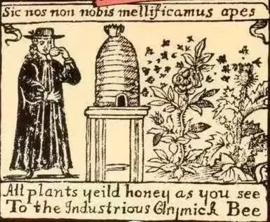
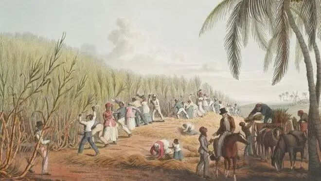
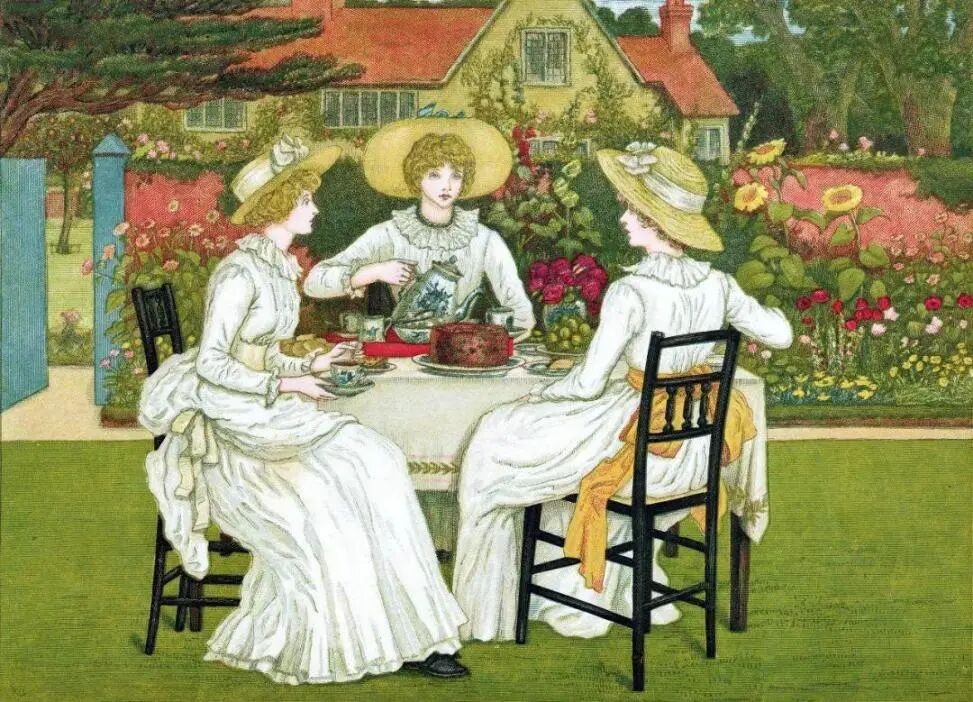
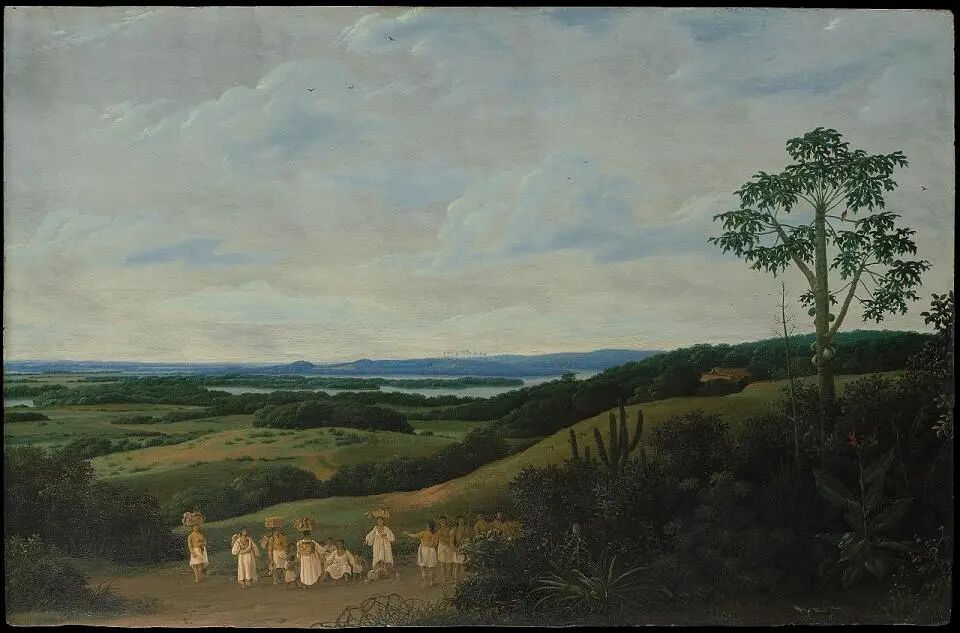

序幕
我一出生就有着黑色的皮肤和一颗甜蜜的心。在这片炎热潮湿的土地，我最早的记忆是和与我长相相同的兄弟姐妹们生活在一起——我们平行生长，构成了一片整齐的树林。
那是500年前的一个遥远的下午，我们的树林热闹非凡，充满了叶片随风摇曳的沙沙欢语。我意识到不止我们在庆祝自己身体成熟后满溢糖分的喜悦，那些同我们一样拥有黑色皮肤，但却多出了可以灵活移动的手脚的另一物种——他们自称为“人类”——的内心一定也满是欢喜。
我对此如此笃定，一方面是由于人类在拿着镰刀为我们修剪枝叶时嘴里总是哼着一种曲调，那曲调神秘而低沉，是为应和我们沙沙作响的叶片而唱的庆祝曲；另一方面，人类与我们相处时眼睛里或皮肤外总是会流出许多透明晶莹的液体，那液体流进我生长的土地，给予了我们最渴望的养分。
我成熟的日子也是我拥有自我意识的第一天。像我的兄弟姐妹们一样，我开始期待着黑人朋友能为我修剪枝叶，并在合适的时候把我和同类整齐地绑在一起，再一同倚着他们的后背移动到树林旁的房子里去。兄长曾听前辈们说，那间房子里有一台巨大的压榨机，它可以提取出我们身体里最甘甜的汁液，把我们每个人最宝贵的糖分融合，再一同历经热锅的熬煮变成一块块黄色的结晶。那一天我第一次知悉，这块黄色晶体可以为人类的身体提供大量能量，是他们求之不得的奢侈品。
越是了解自己的才能和价值，我便越是期待黑人朋友把我带到那间房子里去。然而，很快我便发现他们只为我的兄弟姐妹们修剪枝叶，只为它们灌溉浇水，只把它们砍下并绑在一起背到背上，只把它们带到了我所向往的房子里。望着眼前光秃秃的土地，我成了一株被人类遗忘的甜蜜。
在此之后，我曾远远地听到过那间房子里传来的人类喊叫，我想那定是他们因我的兄弟姐妹们实现了自我价值而发出的欢呼；我也曾远远地看见过在收割完的土地上黑人们在阳光下酣睡，我想那定是他们在帮助我们达成使命后奖励自己的痛快享受。而那时只剩我，孤独地站在空荡的土地，怀念着前几日和兄长们谈论未来时的热闹和欢喜。 “看得出来，你也很伤心。”在那个孤独的傍晚，一个声音在我身后响起，我努力地看向脚下又望向头顶，惊讶地发现我的根系和一棵大树的根系缠绕在一起，我的身体竟在生长时钻进了它树干的空隙。
“我也很想念我的朋友们。五十年前，这里曾是一片绿色的森林，你想象不到有多少植物与我一同生活，又有多少生灵在此栖息。”它的叶片垂了下来，耷拉在枝头，“那群葡萄牙人因我是这片雨林最高的一棵亚马孙乌木饶了我一命，我的朋友们却被他们砍伐待尽，取而代之的是种上了你们这片甘蔗林。”
那是我第一次听到自己的名字，也是我第一次知道我脚下的土地是被葡萄牙人殖民的巴西。我的乌木朋友告诉我它已经在此生长了千年，它的长寿让它得以知晓这世界上发生的一切奇事，它的高大让它得以看见世界上每个角落的图景。
我的一生都享受着它的荫蔽，这就是为什么我的叶片从未因烈日暴晒而枯萎，我的根系可以不断地汲取营养从而让我活得这样长。我的茎干沿着它的茎干生长，于是我也拥有了在亚马逊之巅眺望世界的能力。到二十一世纪，我已是全世界最长寿也最高大的甘蔗树。500年来，我从未被人类发现，因此我得以见证我的兄弟姐妹及一代代后辈们在此生长和离去。 在我初识乌木朋友的那天，夜幕早早降临，天上点点繁星。我不禁向它打听起我的身世，星光闪耀中，它带我回到了古老的过去。
第一幕 我从哪里来，又到哪里去
我的乌木朋友生于两千多年前，按照人类的时间计算，就是公元前5世纪。因此，在那之前的故事它只是听闻，而在那之后的故事它却是实见。
乌木朋友不曾有意探听但却知悉，我的祖先诞生于太平洋的彼岸——新几内亚和印度尼西亚的岛屿。公元前3500年，南岛和波利尼西亚的水手把种植我们的技术传播到了东太平洋和印度洋一带，我的祖先从此开始在印度繁衍生息。
“印度是你们的根。”乌木朋友笃定地说。它出生后亲眼见过公元前300年的印度人把甘蔗榨汁、沸煮、再浓缩成外表包覆着糖浆的暗色结晶团块，制成“生”糖；它也曾亲眼看到一本公元前2世纪的印度古书上写着：“在吃过蔗糖的人体内，连毒药都产生不了作用，他的四肢如石头一样结实坚硬，他变得刀枪不入。”是印度人最早发现了我们的价值，也是他们发明了提炼我们的途径。他们种植我们也重视我们，让我们的甜蜜得以在后来被世界所知。
公元7世纪时，我的祖先跟随着《古兰经》传播的步伐开启了播撒世界之旅。伊斯兰教向外扩张的速度是如此之快，令我的乌木朋友很是震惊：“那些阿拉伯人不到一个世纪就走遍了中东和大半个小亚细亚，此后他们的统治范围覆盖了整个北非，又席卷了地中海东、南、西三面的国家。”乌木朋友的树冠向东歪了歪，告诉我它当时正是站在此处眺望着大洋另一端的阿拉伯人如动物般迁徙。
我们成了阿拉伯人征服世界的印记，一种刻在大地上的邮戳。凡是他们所到之处，土地上都会冒出一片片的甘蔗林，包裹中都会多出一块块的黄色糖。在阿拉伯人的脚步已走到地中海时，欧洲人甚至还不了解我们，他们在此之前只隐约听说过亚历山大大帝在印度发现过一种“不是由蜜蜂制造的固体蜜”，而且它“非常非常甜”。

一直到我的乌木朋友终于成了一棵千年古树，也就是公元11～13世纪时，进行“十字军东征”的欧洲人们才第一次在与阿拉伯人交锋的过程中尝到了“甜头”。他们学会了甘蔗的种植和提炼技术，并迫不及待的把这甜蜜的记忆带回了家乡。从那之后，我的很多前辈就扎根在了地中海地区。我们珍贵的糖分一直到15世纪中叶前都供养着北非、中东和欧洲大陆，我们的甜蜜开始遍布世界各地。
“你们能给人类带去很大的利益。”那是我第一次听到“利益”一词，乌木朋友说，当时的阿拉伯人由于把持了东西方贸易要道，意大利商人又精明地利用了海运和陆运，从而在转卖我们的过程中获得了不少利益。原来，除了能为人类提供能量，我们还能帮他们赚取金银。
我们甚至还能作为药物给人类治病！乌木朋友兴奋地告诉我，它在15世纪时曾亲眼见证了欧洲著名医师在医书中写下：“糖对于热病、咳嗽、胸闷、嘴唇干裂、胃病具有疗效。”它也曾亲耳听见，那些处于极端绝望和无助的人们总是用“就像一家没有糖的药店”来形容自己悲痛的心情。蔗糖是如此有用又如此珍贵，以至于我的前辈们成为了贵族阶层才能享有的物品。在那个繁星满天的夜晚，我想象着人类对那一块块黄色晶体投去的渴望神情。
“后来呢？我们怎么来到的此地？”我好奇地问。我的乌木朋友一瞬间失去了此前的兴奋劲儿，变得悲伤起来。
“后来，一个叫哥伦布的人发现了我们这片陆地，那是在八十年前。”我们的这片陆地——被欧洲人称为“新大陆”的美洲——成为了又一场播撒旅行的必经地。然而，这一次肩负播撒使命的不再是伊斯兰教徒，而是摆脱了阿拉伯人控制的西班牙人和葡萄牙人。
“他们最先去的是德拉群岛、加那利群岛和西非几内亚湾的圣多美岛，”我的乌木朋友喃喃地说，“可是后来他们嫌那些岛屿太小，于是西班牙人又发现了海地，葡萄牙人又占领了巴西。”它开始低声吟唱起来，伴着一种神秘的曲调呜咽道：“人类与我们植物最大的不同，就在于他们从来不知满足。葡萄牙人的罪行不止是砍伐了我赖以生存的雨林，他们还用欧洲人特有的病毒杀害了这里的原住民，又让为数不多的幸存者死在了种植你们时所要承受的烈日下……那些棕黄色皮肤的人类曾是我的朋友，他们一代代在此繁衍生息，陪我看过了千年光景。”
这时星光已经淡去，黎明就要来临。我的乌木朋友仍在低声吟唱着那神秘的曲调，悲伤地哼着：
“你看他们如今又把黑人当成奴隶……”
第二幕 惊悟
乌木朋友吟唱的神秘曲调我似乎在哪里听过。此刻地平线上的第一缕阳光照亮了大地，我发现自己竟在一夜之间像竹子一样长高了两米。
原来我出生于十六世纪，葡萄牙人为了扩大蔗糖的产量让我们生长在巴西，又让我的黑人朋友做他们的奴隶。可我不知道什么是奴隶，我只看见太阳还没完全升起时他们又回到了这片空旷的田地，而那些昨天就在阳光下酣睡的黑人们依然躺在那里。
他们要马不停蹄地清理刚收割完的空地并重新种上新的甘蔗林。远处两个白皮肤的人类神气地骑在马上，指挥着一切的进行。

在甘蔗田里劳作的黑奴与马背上的殖民者
“他们就是葡萄牙人，”我的乌木朋友说，“他们不用下地也不用播种，他们负责交易黑人奴隶，逼迫他们干活并把熬好的粗糖卖出去。他们几乎不用流下一点汗泪，却可以得到这片土地上最大的利益。”
又是“利益”，我想着。此时已有几十个黑人朋友来到了我身旁的土地。他们一直翻土耕种不曾有机会歇息，直到正午十分我便又听到了他们哼唱起那神秘的调和曲。我霎时间联想到了乌木朋友哼唱这个曲调时的悲伤，我终于明白，在我成熟那日他们哼唱的才不是什么庆祝曲，他们是在呜咽在哭泣，在为自己悲惨的命运叹息。
太阳升得越高，黑人朋友们的脚步就放得越慢。我看见他们的皮肤上又溢出了那些透明晶莹的液体，同时还听见了“扑通”一声，是一个黑人栽倒在了他刚清理完的土地。 “愿他安息。”我的乌木朋友沉重地说。于是，我看见那晶莹透明的液体从其他黑人的眼睛里流出，同皮肤上的液体一起淌入脚下的土地。我终于明白，在我成熟那日他们流下的液体不是专门为我准备的肥料，那是他们的汗和泪，是烈日给他们带去的酷刑。
原来我所热爱的炎热天气对人类来说是一种煎熬，原来那些躺在土地上的黑人们不是在酣睡，而是一具具劳累过度后死去的尸体。
在那之后，我看着黑人朋友们每天重复着相同的辛苦工作，就算死去也会立马有新人代替。他们像是被禁锢在了这片土地，不得不听从葡萄牙人的命令以求活命。我逐渐明白了什么是奴隶，我曾在成熟之日羡慕他们比我多拥有了可以灵活移动的手脚而把他们看做自由的化身，可他们现在却都身不由己。
在新种下的甘蔗又一次成熟时，我也长得更加高，看得更加远。这次我真切地看到了树林旁小屋里的情景：一群黑人把收割下来的甘蔗放到了压榨机中提取汁液，而另一群黑人将汁液在热锅中熬煮蒸馏，使糖分凝成结晶。我又听到了一声熟悉的人类喊叫，那曾被我当成“欢呼”的叫声与我正看到的画面大相径庭——一个黑人朋友因为劳累而神志不清，迷糊之中手臂卷进了压榨机的滚轮里。我看到那金黄的甜汁在瞬间被染得鲜红，其他人不得不用斧头砍断他的手臂，免得他整个人都卷进滚轮里。
我的身体从此再也不只装着甜蜜的糖汁，我的根系尝到了黑人奴隶汗和泪中发苦的咸，我的叶片闻到了小屋滚轮上淋漓鲜血的腥。我的甜蜜本是那样纯粹又那样真切，如今却和无尽的苦涩捆绑在了一起——“哪里有糖，哪里就有奴隶。”
第三幕 变味的甜
又过了一个世纪，我已经长得和我的乌木朋友一样高了。透过它树冠的缝隙，我得以窥见这世界上每个角落之景。
黑人朋友们在这百年中仍源源不断地进入巴西，一代又一代地种下我们并提炼蔗糖结晶。这期间，不变的是黑皮肤的他们身上的汗水和口中的呜咽，变了的是白皮肤的人类说起了另一种语言。
“现在已是英国人和法国人的时代。”乌木朋友见怪不怪地说。
17世纪中叶，英国人和法国人已经殖民了我们隔壁的加勒比海地区。那里似乎比我们这儿热闹得多，大大小小的岛屿上都密密麻麻地种植着甘蔗林。我看见一座几年前还人烟稀少的荒岛如今已被开辟成了甘蔗种植园，于是在这几天有成千上万的非洲黑奴被带到那里。
这些英国人的口音我并不陌生，17世纪初始时我就曾在他们生活的岛屿看见过一些奇景。在那里，他们开始把一种来自东方的神奇树叶也当成药品，主要为人类治疗感冒、健忘症和坏血病。与我们相同的是，这种被他们称为“茶”的药品并不像其他药物一样难以下咽，相反，它们体内的清香和我们体内的糖分令人类尝之后欲罢不能。
茶与我们相同的另一点是价格昂贵。在那时，很少有人在不生病的时候使用我们，除了贵族。于是，蔗糖和茶叶就成了人类权力、地位和财富的象征。皇权贵族为了满足自己的虚荣之心，开始把我们蔗糖加到茶汤里，如此，他们的炫富行为便可达到双倍效果。不到半个世纪后的如今，加糖的红茶已经成为了英国贵族绅士社交场合中不可或缺的饮品。
英国贵族是如此喜爱糖和茶，以至于当我远眺英国王室并见到那位被他们奉为女王的伊丽莎白一世时，震惊地发现她细薄双唇背后藏着的竟是两排蛀蚀的牙齿。当她露出黑色微笑的那一刻，我感到她身上那满溢的珠光宝气在一瞬间都消失殆尽。

英国贵族的下午茶文化
终于，我们的糖分还是成了人类虚荣心的催化剂，还是成了他们迷人笑容的腐蚀品。人类可知，这并不是我们作为蔗糖的本心。
贵族阶级为了摆谱，贫民百姓为了治病，人人都迫切地需要消费我们蔗糖这一奢侈品。商人在大量的需求中看见商机，他们渴望利益，因此不停地开辟可以种植我们的土地。随着英法两国人的来临，我对这场贸易图景也看得更为清晰。
只为“利益”。我远远地看见白人从欧洲“出程”，运载盐、布匹和朗姆酒到非洲换取黑人奴隶，又开启自非洲到美洲的“中程”，以黑奴换取蔗糖结晶，再在最后“归程”时用贩卖蔗糖赚取的金银换取新的盐和布匹……他们如此循环往复，变本加厉。
这样无止境的贸易活动在这三个大洲之间组成了一个奇怪的形状。一直到几百年后的一个下午，我才第一次从一群放学的孩子们口中得知我所亲身经历的这一切在他们的历史课本中被称为“三角贸易”。而这个奇怪的形状，在他们的几何课本中被认为是“最稳固的图形”。
为了这“稳固”的“利益”，人类竟能把自己的同类也变成了可贸易的商品。我虽是一株植物，但也能看得出这其中的肮脏与不平。我很庆幸，我虽没有自由之身但却可以平等地生长在这片土地，我也替我的乌木朋友伤心，因为人类竟用这样丑恶的贸易换取了它美丽的雨林。
我曾装满甜蜜的内心在历经这一切后已不再纯粹，我的身体中已多了黑人汗泪的咸和鲜血的腥，如今又加入了作为催化剂与腐蚀品的酸和作为无助旁观者的苦。
这变味的甜，人类不可能食之安心。
第四幕 解脱
到了18世纪，我的同类几乎都移植到了加勒比海或更北的地区，而我眼前的土地被种上了咖啡树和可可林。也是在这个世纪，人类为了争夺贸易美洲商品的权力和满足征服世界的欲望而发动了无数战役。
从西班牙王位继承战到奥地利王位继承战，从七年战争再到美国独立战争，每场充满混乱和鲜血的战役背后总有我们蔗糖的身影。我们或是作为一种被争夺的对象，或是作为一种压榨他人的手段，或是作为一种限制他国发展的重要商品，被人类频繁地写进《税法》和《条例》里。
打赢七年战争的英国如愿地成为了“日不落帝国”，而北美却在英国无尽的掠夺和压迫之下走向了独立。好在这一战乱不断的世纪很快过去，我终于在新世纪到来时闻到了不同的气息。
19世纪，我后辈所产的糖已经多得让我们最终得以摆脱贵族之手，并使每个平民百姓都能买得起。这时，启蒙运动的成果终于让人类认清了什么是自由平等，什么是压迫奴役。他们终于意识到奴役黑人是相当卑鄙的行径，黑人本应同每个人一样拥有平等的权力。
于是，在“废除奴隶贩卖委员会”“圣人会”“福音会”以及人类的工人、妇女、儿童和非政治团体的共同努力下，英国最终于1807年停止并废除了奴隶贸易，并于1833年在全部殖民地废除了奴隶制度。西班牙的殖民地古巴在废除奴隶制时已是1880年，而我所在的葡萄牙殖民地巴西最为不幸，直到1888年才让我的黑人朋友得到了真正的解脱。
人类也终于能像我们平行生长一样平等地生活。300年来，有超过1250万非洲人被运往我们这片“新大陆”做奴隶，而其中有三分之二的黑人在甘蔗种植园和炼糖厂里为白人日夜劳作，帮他们积累了大量金银。
我是多么希望我所偏爱的生长环境对人类的生产生活而言不那么艰辛，我也一直希望人类能找到一种更为轻松的甜蜜。
人类做到了，他们在18世纪中叶找到了甜菜并在19世纪学会了用甜菜制糖。从此，我身上背负的甜蜜负担不再那样沉重，在这一新的世纪，我也终于得到了我的解脱。

弗兰斯·波斯特（Frans Post）的木板油画《巴西风光》
尾声
我本是一棵产于亚洲的甘蔗树，但最后却成为了非洲人工、美洲种植、欧洲消费的世界商品。千百年来，人类因我而积累财富，也因我而失去生命。
多亏了亚马孙乌木树干的空隙，我得以聆听我传奇的曾经，也亲历我本无机会得知的命运。500年中，我见过得利者脸上的黑色微笑，也见过奴隶者身上的点点汗滴；我见过战场上的累累血骨，也见过新世纪的和平安宁。我本是救人于病榻的良药，但最后也成了腐蚀人心的毒品。我的存在揭露了人类最肮脏的本性，却也重新唤醒了他们的良心。
利益和金银的甜终会换来流血与牺牲的苦。我已尝过无数的苦涩和咸腥，因此只希望自己能拥有最初的那颗——藏于黑色皮肤之下的——“甜蜜的心”。